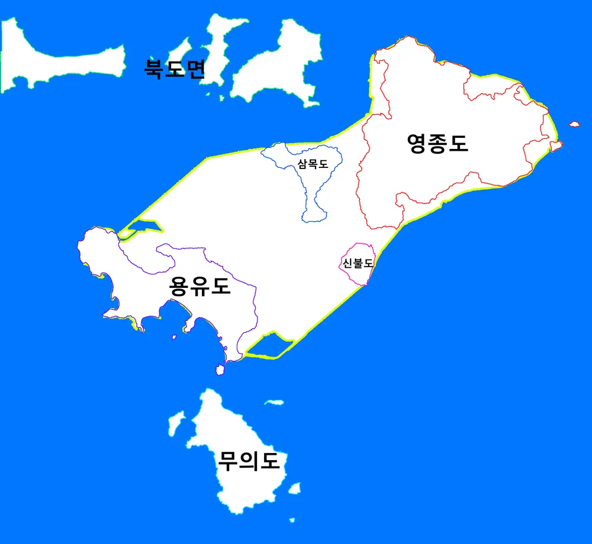

내가 태어난 곳
제가 태어난 곳은 경기도 수원시의 한 산부인과입니다.
태어날 때 부터 수원에서 태어나 초중고등학교 시절 모두 수원에서 보냈고
지금까지도 수원에서 살고있습니다.
내가 가봤던 곳 또는 가보고 싶은 곳
가봤던 곳 그리고 또 가고 싶은 곳은 인천 영종도입니다. 처음 영종도를 알게된 계기는 군대에서 자대배치를 받았을 때 였습니다. 그 전에는 어렴풋이 인천공항이 있던 곳으로만 알고 있었는데 영종도라는 섬을 직접 두 눈으로 보고 느끼게 된 건 태어난 지 21년이 지난 후 였습니다. 육지랑 꽤나 먼 거리가 떨어진 섬이라는 걸 몸으로도 느낄 수 있을 정도로 사면이 바다로 둘러쌓여있다보니 해풍이 많이도 불어 여름엔 습하고 겨울엔 추웠습니다만 막상 군대에서 바라본 시선이 아니라 전역을 하고 난 뒤 민간인의 시선에서는 눈을 어디에 둬도 바다로 가득차게되는 갇혀있지 않고 트여있는 보는 사람의 마음이 편안해지는 곳이라고 느껴지기 때문입니다. 특히 친구들과 갔었던 카라반 캠핑장은 아직까지도 제 마음 속 좋은 추억으로 남아있습니다.
내가 좋아하는 음식
매일 먹다보면 질리고 쳐다보기도 싫을 때가 있지만 막상 며칠 지나고보면 다시 생각나는 음식인 김치찌개가 제가 제일 좋아하는 음식입니다. 어렸을 때 부터 저희 어머니가 해주셨을 때도, 제가 직접 끓였을 때도, 밖에서 사먹을 때도 개인적인 만족감이 높은 음식이다보니 어느 순간부터 제가 제일 좋아하는 음식으로 자리를 잡았습니다.
내가 좋아하는 것
다 큰 남성이나 어린 아이같이 남성이라면 가장 보편적으로 갖고있는 취미인 게임입니다. 미취학 아동일 때 부터 접했었던 컴퓨터이자 게임이다 보니 그때도 지금도 그리고 더 나이를 먹은 뒤에도 평생의 취미로 함께하지 않을까 싶습니다. 물론 그런 게임보다도 더 좋아하는 건 제가 좋아하는 사람들과 소중한 시간을 함께 보내는 것 입니다.